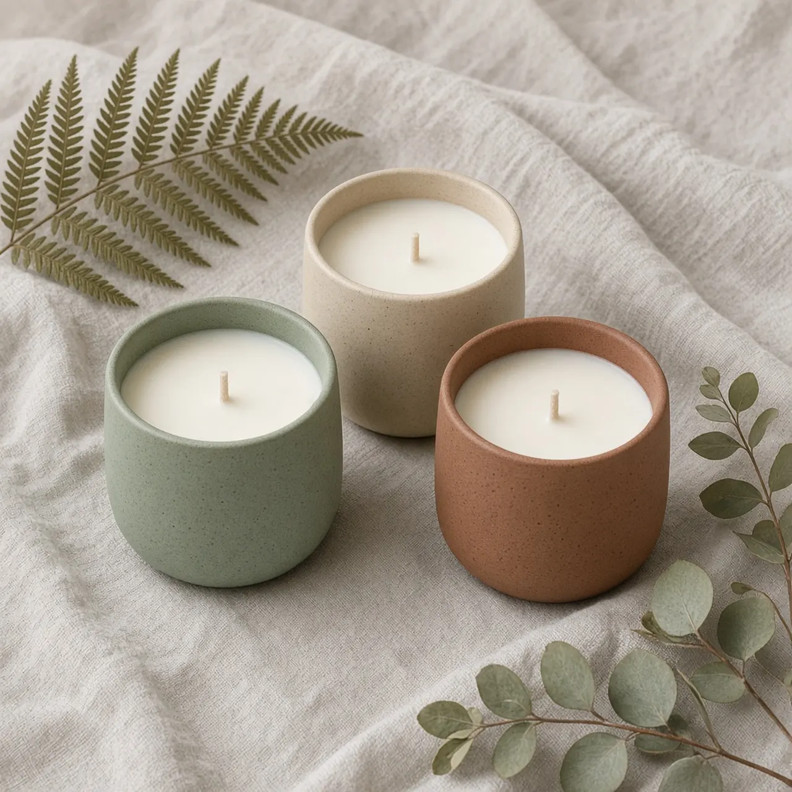

Made slowly
An invented maker story written to show a small-shop brand voice.

Each batch is poured by hand in small runs of 48. We use soy wax, cotton wicks and fragrance oils free of phthalates, in ceramic jars made to be refilled.
Refill program: return your jar and get a refill for 30% less.